Camera Calibration¶
ICL provides a very intuitive tool for camera calibration. While common tools, such as OpenCV’s camera calibration tool or the Matlab camera calibration tool-box, use a checker-board, that has to be presented in many different orientation to the camera, ICL performs camera calibration in a one shot manner. By using a 3D calibration object and by assuming lens-distortion correction to be performed independently (see below), accurate camera calibration can actually be performed in real-time. Given a well described and accurately built calibration object, camera calibration is performed in less then one minute.
In order to bypass detection issues, ICL’s camera calibration tool makes use of ICL’s built-in fiducial marker detection toolbox. The calibration object needs to be augmented with a set of fiducial markers that can be detected with a high reliability and high accuracy.
The calibration prodecure produces a camera description xml file, which is used to instantiatiate the geom::Camera class. The camera class is used for ICL’s 3D computer vision tools located in the icl::geom package.
The calibration toolbox implicitly includes calibration of multi camera environments. To this end, each camera can simply be calibrated seperately, each resulting in a portable and human readable xml description file. Since Kinect (consisting of a depth and color camera) can basically also be seen as a stereo camera system, ICL implicitly supports RGB-D calibration allowing to compute the mapping between Kinects color and depth image.
Note
Usually Kinects depth-camera is calibrated by exploiting the fact that Kinect also allows to grab the camera’s intensity (IR) image. In contrast to the depth image, the intensity images also allows fiducial markers to be detected just like in common gray-scale or color images.
Table of Contents¶
Image Undistortion (Lens distortion correction)¶
ICL explicitly distinguishes between camera calibration and correction of lens distortion. While camera calibration only builds on projective geometry, lens distortion can only be modeled in a non-linear manner leading to several issues in former processing steps. Therefore, ICL explicitly assumes lens distortion to be corrected before camera calibration is approached.
The ICLCV module provides two different tools for the estimation of lens-undistortion parameters:
- icl-lens-undistortion-calibration (please do not use this!)
- icl-lens-undistortion-calibration-opencv
While icl-lens-undistortion-calibration-opencv internally employs OpenCV’s calibration method, icl-lens-undistortion-calibration is implemented without OpenCV.
In contrast to OpenCV’s built-in calibration application, icl-lens-undistortion-calibration-opencv comes up with a set of additional convenience features, such as automatic acquisition of calibration frames and an option to replace the checkerboard-input image by a fiducial-marker-based input grid.
We initially had the impression that the OpenCV-based calibration tool in some cases has a tendency to yield very bad results so we put some effort into a standalone application. However, it later turned out that the OpenCV tool actually works very well. The unsatisfying results that we obtained were mainly caused by the misconception of the to-be-used calibration pattern. When performing a google search on “opencv calibration”, one could come to the conclusion that a small 8 by 6 checkerboard pattern is most commonly used and therefore also optimally suited. We, however, came to the conclusion that a much more detailed pattern leads to much better results.
OpenCV-based Lens Undistortion¶
The ICL application icl-lens-undistortion-calibration-opencv, located in the Computer Vision Algorithms module provides the necessary functionality to obtain appropriate parameters for lens distortion correction. For the tool a common checkerboard image is needed. In order to obtain optimal calibration results, the image of the checkerboard must be printed out and attached to a very planar surface. Alternatively, the images could also be displayed on another computer screen, so that it is visible by the camera. The tool also allows a marker-grid image to be used.
Note
The checkerboard dimensions, that need to be given to the program refer to the amount of inner checkerboard edges, so usually one less then the intuitive number of x and y cells.
In order to initiate the tool, just run it with an approriate parameter set, e.g.:
icl-lens-undistortion-calibration-opencv -i dc800 0 -g 7x5
This uses the first fire-wire 800 device, a 7 by 5 checkerboard and a set Here is a screenshot of the application running:
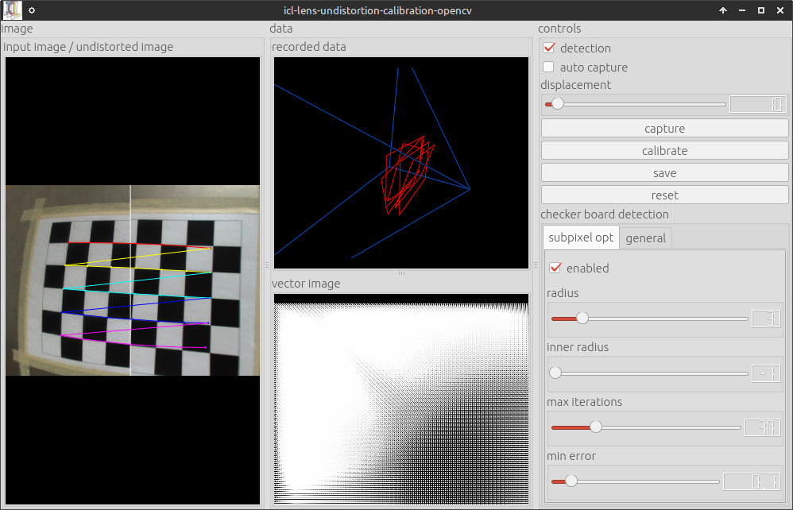{kind=link}
Once enough calibration frames were collected. The calibration can be triggered. The collection of calibration frames can be triggered manually or an automatic mode can be activated. Here, the system would store every input frame that has more than a minimum displacement (adjustable using the a slider) all other already captured frames. OpenCV internally computes two sets of calibration prameters:
- Parameters describing the projective camera geometry (focal length in x and y direction, and principal point offset of the camera, and skew – which is always 0 here).
- Parameters describing the compensation of lens distortion. Here, we use the standard model described by 5 scalar parameters k1, …, k5
It turned out, that the estimation of the projective geometry parameters is more accurate when using a 3D calibration object, which is why these parameters are estimated and also saved, but not used in the further steps of the processing pipeline. Pressing the save button pops up a file dialog, which allows the destination xml file to be selected. The resulting file looks like this one:
<?xml version="1.0"?>
<config>
<data id="model" type="string">MatlabModel5Params</data>
<section id="size">
<data id="width" type="int">1280</data>
<data id="height" type="int">960</data>
</section>
<section id="intrin">
<data id="fx" type="double">983.148</data>
<data id="fy" type="double">983.148</data>
<data id="ix" type="double">637.959</data>
<data id="iy" type="double">492.924</data>
<data id="skew" type="double">0</data>
</section>
<section id="udist">
<data id="k1" type="double">-0.0603882</data>
<data id="k2" type="double">0.166041</data>
<data id="k3" type="double">-0.00242741</data>
<data id="k4" type="double">0.000178947</data>
<data id="k5" type="double">-0.145061</data>
</section>
</config>
Once an undistortion parameter file is available (e.g. called udist.xml), it can be passed to all ICL-applications that use the io::GenericGrabber (see also The Generic Grabber) for images acquistion. Usually ICL applications use the generic grabber in combination with ICL’s program argument evaluation toolkit (see also Program Argument Evaluation and/or this code example). These applications most of the time provide an input argument -input which allows two additional parameters to be passed e.g.:
icl-viewer -input dc800 0
Here, the first sub-argument dc800 selects a grabber backend, which is fire-wire-800 in the given example, and the second sub-argument selects a device from that backend (here, the 1st one found – at index 0). As explained here, the second sub-argument can be augmented with additional parameters of shape @name=value that are then passed to the underlying grabber implementation. As a generic feature, all backends support the parameter @udist=udist-xml-file, so using the created file udist.xml with our icl-viewer application would work like:
icl-viewer -input dc800 0@udist=./udist.xml
When using a camera with significant lens distortion, it is strongly recommended to acquire undistortion parameters before approaching the actual camera calibration step, since this assumes undistorted images to be used as input.
Marker-based Detection
The checkerboard-input of the camera calibration tool has the severe disadvantage, that input calibration frames can only be used if the whole checker-board is visible. This, however, leads to the fact that it is very difficult to provide calibration frames that also cover the border regions of the images well. In order to make this step more convenient, a marker-based grid can be used as well. Here, also a sub-set of marker-grid can be used for calibration. By calling:
icl-lens-undistortion-calibration-opencv -i dc800 0 -m bch '[0-629]' 8x8 -g 30x21
The OpenCV-based camera calibration tool uses a 30x21 bch marker grid as input. Here is a screenshot
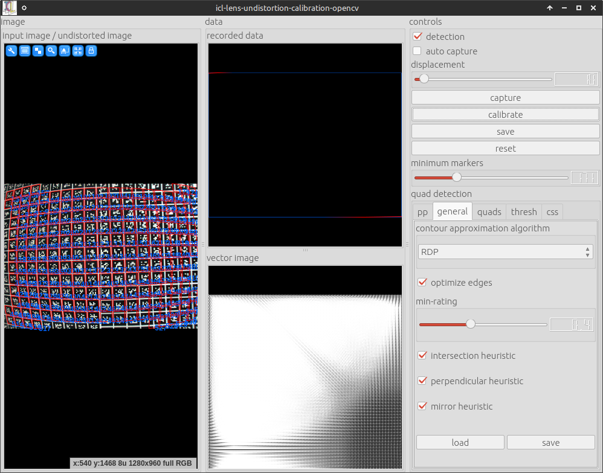{kind=link}
As one can see, only a part of the marker-grid is visible and still the calibration can be performed very well.
ICL’s native Lens Undistortion Calibration Tool¶
Please note, the work on this calibration tool was suspended. Please Use icl-lens-undistortion-calibration-opencv instead
ICL’s camera calibration tool works quite similar to the OpenCV-based tool, but it can only use marker-grid input. Appropriate marker-grid images can be created using:
icl-create-marker-grid-svg [...]
This allows grid parameters to be specified, such as the grid-dimension, the size of markers and the gap between them. The results is an SVG image that can then be converted into pdf or printed directly using standard external tools such as Inkscape. The calibration tool itself can be run using:
icl-lens-undistortion-calibration -i dc800 0 -g 30x21
The user-interface differs a little bit from the OpenCV-based calibration tool, but in general, it works very similar. Basically one should make the grid visible in the camera and then go to the optimize tab on the right. Here, one can click capture frame for each to-be-captured input frame and then optimize for the actual optimization. Please note that in particular, the OpenCL-based calibration mode is significantly faster – albeit calibration still takes some seconds. Here are two screenshots of the tool:
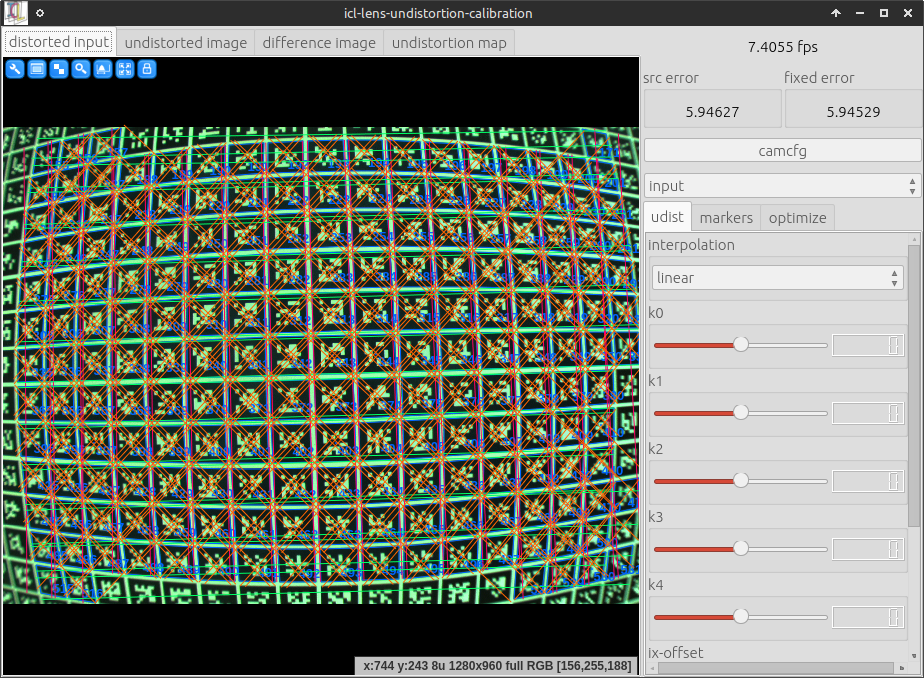 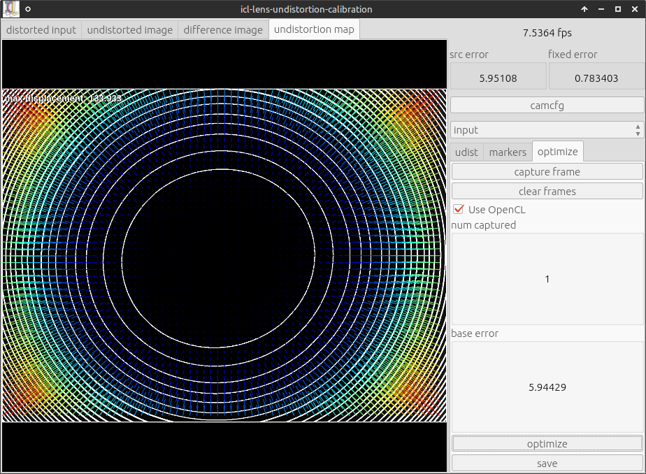{kind=link}
{kind=link}
The Calibration Object and its XML-based description¶
Before the actual camera calibration can be performed, a calibration object needs to be constructed. The calibration object is then augmented with fiducial markers that can be be detected robustly with ICL’s marker detection toolbox. It is very important to mention that the calibration object needs to be a real 3D shape, e.g. the fiducial markers must not be located on a coplanar surface only. It is recommended to construct something like a wooden angle with a 90 degree corner, but all shapes, with known surface geometry are possible. Once the Object is built, fiducial marker can be attached to the object. Each fiducial marker will provide a image-to-world point correspondence, needed for the calibration step, so the more markers are used, the better the calibration result that can be obtained. As a minimum 8 markers are needed, however, it needs to be taken into account, that if only 8 markers are attached to the calibration object, all markers must be detected. If more markers are used, the calibration process will be faster and more accurate. Each marker that is attached to the object later needs to be described geometrically w.r.t. an arbitrary, but (for all markers) fixed calibration object coordinate frame. For each 2D marker the following properties need to be defined:
- marker size in mm
- marker offset to the object frame
- the fiducial marker type and ID
In order to facilitate the definition of a calibration object with many markers, it is also possible to arrange sub-sets of the markers in a regular 2D grid aligned coplanar in the object space. In this case, the whole grid of markers can be described at once by:
- marker size is mm
- grid dimensions W x H
- offset of the upper left marker’s center in object coordinates
- displacement vector between two marker centers in x-grid-direction (given in object coordinates)
- the same for the y-grid-direction
This allows a large set of marker to be defined at once. Markers defined within a grid description also have a large advantages. Due to the fact that they have a well defined x and y direction, the given size information can be used to derive the object-coordinates of each of the markers corners. This then allows the system to not only use the marker center as a known object-to-world correspondence, but also its four corners, resulting in a much higher key-point density.
Note
Also single markers can be defined as a 1 by 1 grid. In this case, only the normal direction of the given x and y displacement vectors are used to derive the object coordinates of the marker corners. By these means, the marker corners can also be used for markers that are not part of a larger grid
A single calibration object can consist of several grid definitions and also several single marker definitions, that are then all used for calibration.
In addition to the definition of markers attached to the calibration object, a set of suggested object-to-world transforms can be provided. Each suggested world transform can then later be selected from a combo-box at run-time. For the typical triangularly shaped calibration objects these suggestions usually provide an initial rotation of the object so that it can be put standing upwards into the scene. But also an offset between the object and the desired world-frame can be defined here. Alternatively, the object-to-world transform can also be defined interactively at run-time, but it is recommended to do this only if the desired object-to-world transform is not available. The GUI allows for printing the manually defined object-to-world transform, so that it can be copy-and-pasted into the calibration object file in case the calibration needs to be performed again at a later point in time.
Last but not least, the calibration object definition file can contain data that defines the geometry of the calibration object in .obj file format. This is then read by the calibration application, which allows to directly render the calibration object geometry using the estimated/calibrated camera parameters as an image overlay in real-time.
Note
Please note that the accuracy of the description/measurement of the marker layout is directly linked to the accuracy of the calibration result.
and
Note
Due to their outstanding accuracy, it is strongly recommended to use BCH code markers (see BCH Markers (“bch”))
Calibration Object Examples¶
In order to provide a better understanding of what is mentioned here, two examples are presented.
| 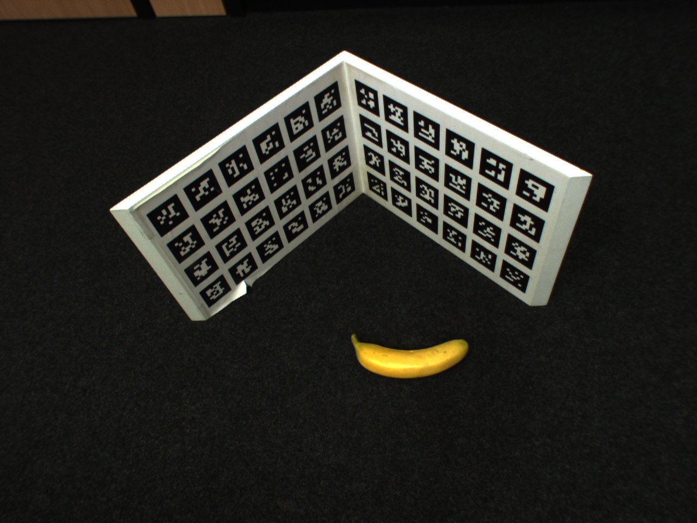 | 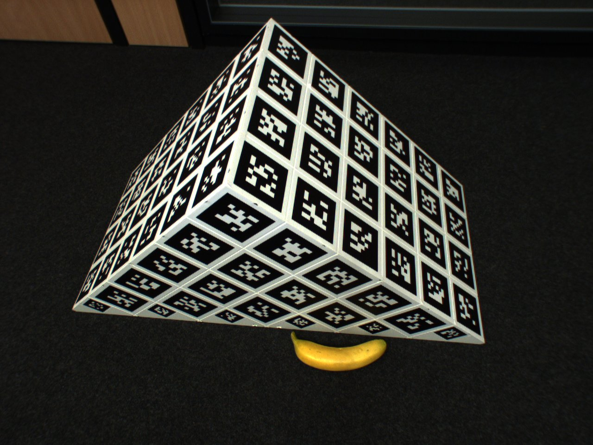 |
| Our first calibration object. The object consists of two planks of wood attached to each other in a 90 deg angle. The faces are 300 by 430 mm (banana for scale) | Second calibration object example. The object was professionally designed using CAD software and optimized with respect to several regards in comparison to our first design. |
{kind=link}
{kind=link}
First Example (download xml file here)
The calibration object description file uses ICLs config-file class (see ConfigFile and XML-based Configuration Files), which uses a special xml- based format. Due to its very regular shape, the object’s markers can well be described by 8 grids of markers – two for each face (The invisible back-faces are covered with markers as well). The reason why each face is not represented by a single grid is that the markers were printed on A4 self-sticking labels that we were not able to 100%ly align into a single regular grid of markers.
In the first sections, the marker layout is presented. It is important to mention that the grids need to be successively enumerated (grid-0, grid-1, …). The marker IDs can either be a continuous range [start,end] or a list of marker IDs {a,b,c, …}. The IDs are assumed to be distributed in row-major order (row by row, from left to right) to the grid.
The following sections then define a set of suggested object- to-world transforms. Each again successively enumerated. Each transform is also given a unique name, that will later become a combo-box entry in the calibration application’s GUI. If no world transforms are given an identity transform is automatically provided but if there are suggested transforms, it is usually not the worst idea to also provide an identity transform that then can manually be selected in the GUI.
The last section contains the .obj file description for the object geometry. Even though this is purely optional, it is strongly recommended to use this feature, because it significantly facilitates the manual evaluation of the current calibration results.
Second Example (download xml file here)
The most important difference is the much higher manufacturing
accuracy reached by a better design and material (PVC).
- by adding the sides of the object, strong angle deformations are avoided
- an additional supporting bar at the otherwise open bottom side provides additional stability and shape accuracy and also works as a handle of the object
- the fields where the markers are attached are predefined by using high precision flutes added with a CNC milling cutter
- each marker is still attached manually, but not as part of a single A4 sheet of self-sticking paper. Instead, each marker was added separately. By these means, small errors in manually attaching the markers do not lead to general drift (when sticking a whole grid slightly rotated onto the object, all markers are wrong into the same direction), but small errors can be assumed to compensate each other mutatively.
The structure of the corresponding description file is comparable to the first one, but it also demonstrates how to add single markers and also the side faces are more complex to describe.
Since single markers do not provide a direction, they only provide a single point 2D/3D point correspondence to the calibration procedure. By defining the markers as a 1 by 1 marker grid, also a direction can be given allowing to also use the 4 marker corners as point correspondences.
While the square top faces result in large regular grids, the front and back-face definition required a little hack. Rather than defining the faces by many single markers, they were defined by a 5 by 5 marker grid each, where the missing marker IDs are simply not used.
Todo
add a helper application that can provide images of an artificial calibration object
Note
the marker ID order is known to be a bit strange
ICL’s camera calibration application¶
Once a calibration object is available, it can be used for fast camera calibration. The application we need for this is called icl-camera-calibration. The application knows several input arguments that will be presented in the following. A standard way to start the application would look like this:
icl-camera-calibration -i dc800 0 -c ./calib-obj.xml
This would start the calibration application acquiring images from the first firewire 800 device using the calibration object described in ./calib-obj.xml.
Note
In case of the need for a prior lens undistortion (see Image Undistortion (Lens distortion correction)) the resulting parameter file (e.g. called udist.xml) would have to be passed to the fire-wire backend used by icl-camera-calibration. E.g:
icl-camera-calibration -i dc800 0@udist=./udist.xml -c calib-obj.xml
However, for this tutorial, a single image (a png version of the one shown above) of our more sophisticated calibration object is used. An image can also be used as input by selecting the file grabber image input backend:
icl-camera-calibration -i file myImage.png -c calib-obj.xml
When the application starts, the resulting GUI looks like this
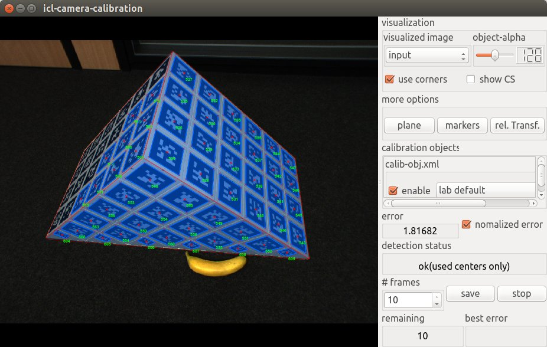The GUI provides several features:
visualized image here, you can select which image of the processing pipeline you want to see in the left images display component. Possible options are input, which shows the real input image, pp, which shows an intermediate image after the preprocessing step (usually gray) and binary which shows a binary version of the input image. The binary image is actually used internally for fiducial marker detection.
object-alpha allows the transparency of the object’s geometry overlay to be adapted. For a solid object visualization, the alpha value must be set to 255.
Note
setting the alpha value to 0 allows for looking through the object, which is sometimes necessary to see a coordinate frame that occurs behind the virtual object. Due to the fact, that the used OpenGL does not support real transparency handling even a partly transparent object would not allow to see through it
use corners defines whether to use marker corners or only marker centers. Actually, it is strongly recommended to always leave this checked. When internally solving the equations for camera calibration, using the corners sometimes lead to worse solutions – most of the time only when already enough marker centers are available. In this case the system will automatically not use the corners internally
show CS visualized the current world coordinate frame. If the object-to-world transform is identity this will be equal to the local calibration object coordinate frame
more options.plane here, an artificial plane visualized as a 2D grid) can be added to the rendered scene overlay. An extra dialog that pops up allows the plane normal, the size and the color of the plane to be adapted. Once a plane is added, the mouse can be used to point at that plane in order to visualize the estimated 3D coordinate of the intersection between the plane and the view-ray estimated from the current camera calibration result and the mouse pointer. This feature becomes very handy when trying to estimate the real quality of the calibration result. You can e.g. measure a real distance or a known key point in the world and then point at that point in order to directly see the point’s estimated 3D position, which should in an optimal case be identical to the known 3D position.
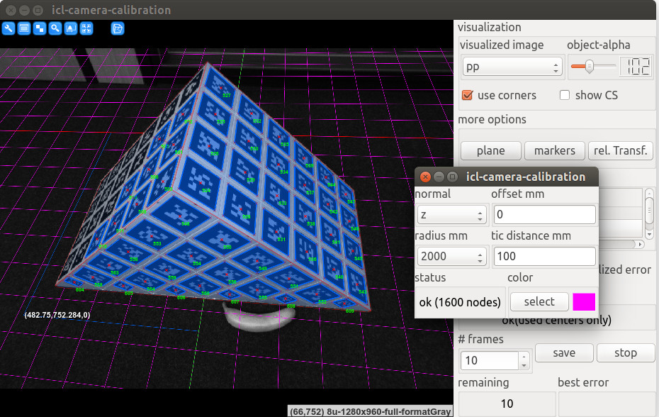The image shows an example of a grid, visualized as an overlay of the pp image.
more options.markers This is actually the most complex and sometimes also important set of properties that can be adjusted. The extra GUI that pops up allows for setting all properties necessary for the marker detection. Usually, these parameters are adapted after switching the the binary image. The most common parameters that have to be manually tuned here are the ones in the thresh tab, which define the mask size and the global threshold for the used filter::LocalThresholdOp instance. By adapting these parameters, it usually becomes possible to detect more markers, which then directly improves the calibration result.
Note
It is not the worst idea to optimize your calibration outcome by trying to find the parameter set that leads to a maximum number of detected markers. In contrast, tuning the parameters in order to make the error become as small as possible does not really make sense. For the calibration result, it is very important that
- as many markers as possible are detected
- the detected markers are well distributed over at least two non-coplanar surfaces of the calibration object
- the markers of the detected object cover a large part of the actual 2D image (optimally > 80%) and optimal reach into the corners of the image
more options.rel. Transf shows an extra GUI that allows an additional object-to-world transform to be adapted. This is also the tool of your choice to add object-to-world transforms to the object description file. You can either start with an already defined transform (by selecting this in the combo-box below) or you can start with the identity transform. If we call this T1, the relative transform TR will also be pre-multiplied to get the actually used transform (TR T1) that defines the world-coordinates of the object’s reference points. Once an appropriate transform is defined, the pop-up GUI allows for printing the current transforms (both, TR and TR T1), which can then be copy-and-pasted into the object description file and once it is endowed with an appropriate name, it can be selected in the transform selection combo box.
Note
for this, the application has to be restarted
calibration objects Here, it becomes clear, that the application can actually handle an arbitrary number of calibration objects at once (simply pass several calibration object files at once to the -c program arguments, but ensure that the used marker sets do not overlap to avoid random behavior). When each of the calibration objects is a set up with an appropriate (and compatible transform), the union of all reference points it used for calibration.
Note
please ensure that the actual relative transform between different calibration objects use is well defined, since little relative displacements will significantly decrease the calibration quality
For each selected calibration object (checkbox checked, a predefined object-to-world transform can be defined.
error and detection status This simply shows an average object detection error. The error is given by the square error of references points (in image space) and their virtual camera projects when using the currently estimated camera parameters. Normalizing the error* will normalize this value by to the number of actually found markers – otherwise, less detected markers would result in a smaller erro.
Saving the calibration Result¶
Once an appropriate calibration result is obtained, the resulting camera description can be saved using the save button. This will raise a file-dialog for selecting an output .xml file. When starting icl-camera-calibration with the program argument -o /tmp/myCalib.xml, the file dialog is suppressed and the passed output file is used
Note
When using -o filename, the system will not ask before overwriting files.
How can the result be used ?¶
The resulting XML file can be used in combination with the ICLGeom module. There are basically two main purposes for the geom::Camera: visualization and 3D-vision. As for visualization, the Camera class, which can be instantiated from a given calibration result .xml file, is directly linked to ICL’s Scene Graph Framework. The main goal here was to provide a very simple way to
- calibrate a real camera device C
- obtain the calibration result
- use the calibration result as a virtual camera
- create a virtual scene
- add the virtual camera to the virtual scene
- add virtual objects
- render the virtual scene on top of an image stream acquired from C
In this case, virtual and real objects should perfectly overlap if they are located at the same position (the real object in the real world, and the virtual object in the virtual world). ICL’s visualization framework provides exactly this in a very intuitive manner at it even allows for zooming and panning of the view while preserving the images’ aspect ratio.
Please also see Using the SceneGraph to Render an Image Overlay.
Calibrating Kinect and Kinect-Like Devices¶
When using the Microsoft Kinect Camera, or other comparable devices, that consist of a depth and a color camera, an important feature is RGB-D calibration, which means to calibrate the used Color and Depth camera. The actual issue is the determination of the parameters, that provide the pixel-location of a given depth image pixel in the corresponding color image. Since the cameras’ view axes are not identical, a small non-static offset between the the two image spaces exists.
| 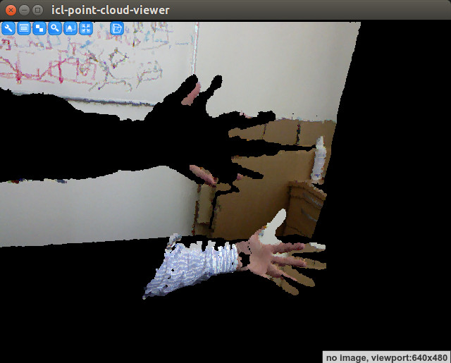 | PointCloud visualization extracted from an uncalibrated kinect device. If you have a kinect attached to your computer, you can generate such a visualization e.g. with: icl-point-cloud-viewer -pci dcam kinectd,0,DEFAULT,kinectc,0,DEFAULT
As one can see, the color mapping is not correct. This becomes very obvious for the part with the human hand. |
Step by step RGB-D calibration of a Kinect device¶
The mapping between the two cameras can easily be estimated by simply calibrating both kinect cameras separately in two calibration steps – one for each camera. For this is is very important to not move the camera or the calibration object between the two calibration steps.
Calibrate the color camera (using the calibration object description file, which is here located in the current directory):
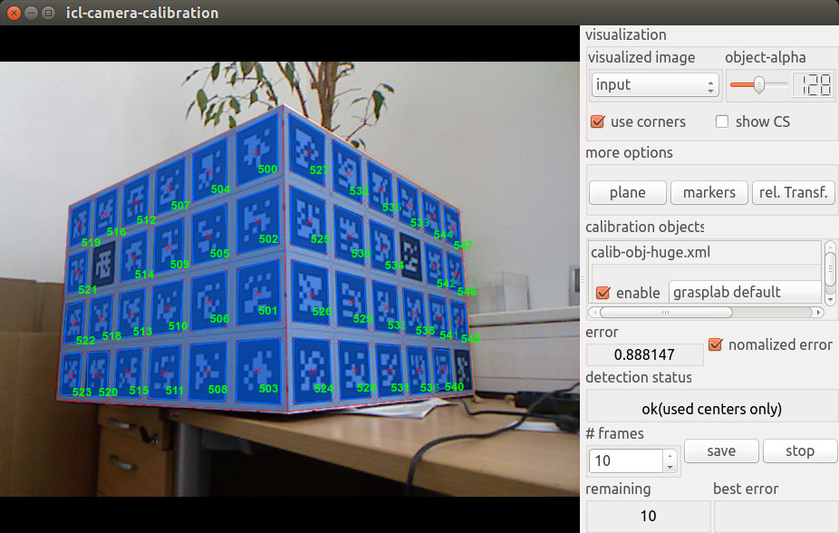icl-camera-calibration -input kinectc 0 -c calib-obj-huge.xml -o color.xml
The result is the xml-file color.xml which describes the parameters of the kinect color camera. If you are only interested in the mapping between color and depth camera, the actually used object-to-world transform is completely irrelevant, but is must of course be identical in the two calibration steps
Calibrate the depth camera. This step is actually a bit more tricky, since the markers on the calibration object can not be detected in the depth image. However, since it is known, that the depth image is computed on the basis of the IR-intensity image, which can also be accessed from the kinect camera, this is still possible. The only drawback, when calibrating on the basis of the intensity image, is that the actively emitted IR speckle pattern makes marker detection more difficult and potentially less accurate. While this effect becomes negligible in case of using a large calibration object with large markers (Due to the minimal viewing distance of kinect of about 70cm, smaller objects with smaller markers cannot simply be placed closer to the camera), smaller markers can quickly become undetectable by the system:
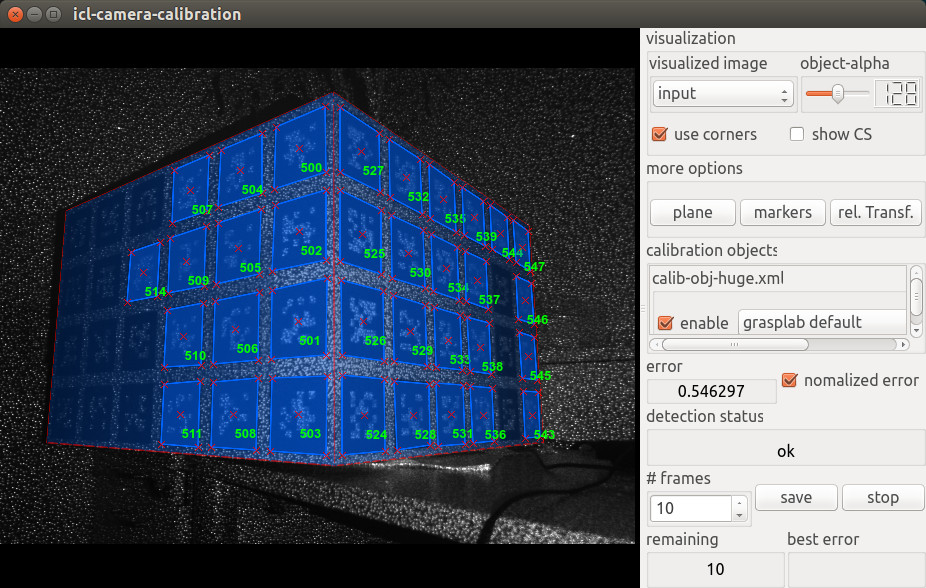icl-camera-calibration -input kinecti 0 -c calib-obj-huge.xml -o depth.xml
As one can see, smaller markers are detected much worse in the noisy intensity images.
Note
The speckle pattern can sometimes be too strong for robust marker detection. In this case, adapting the marker detection parameters can lead to acceptable results. In addition, we found out, that temporarily covering the Kinect’s IR-speckle pattern emitter with one or even two layers of transparent plastic foil (e.g. from a transparent bag or a clear plastic folder) diffuses the emitted speckle pattern significantly. This can help to strongly increase the marker detection result, which, in turn, also improves the calibration result.
{kind=link}
{kind=link}
| 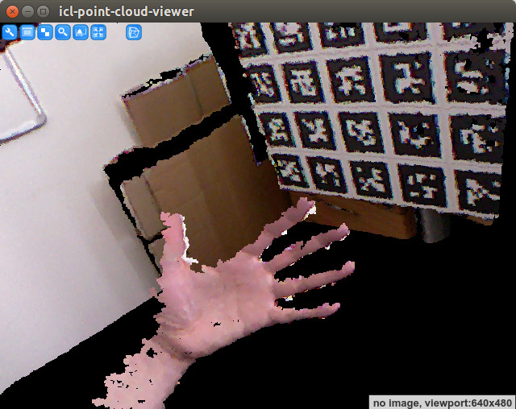 | Once the two calibration files (here, depth.xml and color.xml) are available, the geom::GenericPointCloudGrabber that is recommended to be used for point cloud input can be set up to use the calibration result. As an example, we can again use the icl-point-cloud-viewer application, which was already used before to visualize the erroneous RGB-D calibration: icl-point-cloud-viewer -pci dcam kinectd,0,depth.xml,kinectc,0,color.xml
As one can see, the color and the depth images are now impressingly well alligned. Note Please keep in mind, that perfect aligment/mapping from color to depth image is not always possible. In case of having more than one object layer, the coloring of the back layers/background cannot be 100% perfect, since the color of object parts that are visible by the depth camera, but occluded in the color camera image will be taken from the object that occludes the other one |
Calibrating Kinect with lower Resolution¶
In many applications, the Kinect’s depth images is not used in its maximum resolution (VGA), but only in QVGA resolution (320 by 240). This is due to the fact, that the additional amount of pixels (4 times as many) when using full VGA resolution does not scale well to the additional amount of information obtained when using VGA rather than QVGA. Due to the method that is used to computed Kinect’s depth image, many sources argue that Kinect internally does not support more than QVGA resolution and the VGA image is basically and intelligently up-scaled version of this. Only by reducing the resolution to QVGA, many point cloud processing applications obtain real-time capabilities.
However, using ICL’s calibration pipeline sketched above for Kinect with QVGA resolution usually leads to difficulties when calibrating the depth camera from the QVGA-intensity images. Here, often the visible speckle pattern becomes too strong leading to an impossible or very inaccurate calibration. In order to avoid these issues, the camera calibration application provides an option to calibrate a camera with a higher images size and then to internally artificially downscale the resulting calibrated camera’s resolution to a given one. In case of the kinect camera, this could be done with:
icl-camera-calibration -input kinectc 0 -c calib-obj-huge.xml -o color.xml -os QVGA
icl-camera-calibration -input kinecti 0 -c calib-obj-huge.xml -o depth.xml -os QVGA
The given output-size (arg -os) is then used for the resulting camera parameter .xml file. This feature can of course also be used for normal cameras.
Note
This only leads to useful results, if the used camera images the one of larger resolution that is used for calibration and the one with the smaller target resolution are actually down-scaled versions of each other. If a camera (e.g. the Point Grey Flea2G) uses only a part of the full image when the image size is adapted, the calibration does not work with the -os argument.